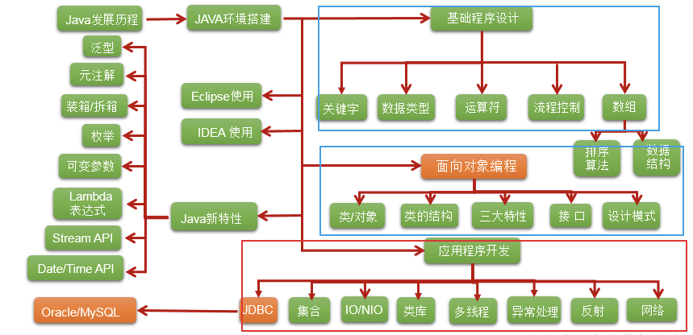
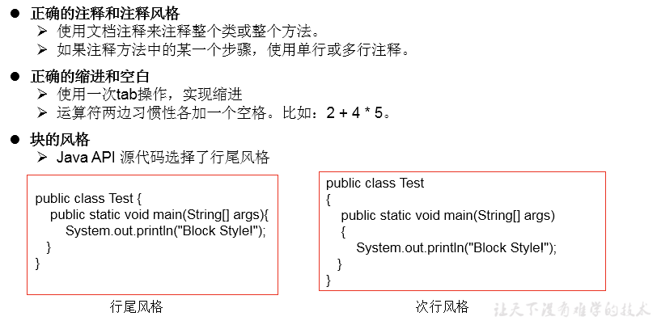

1 基础常识
软件：即一系列按照特定顺序组织的计算机数据和指令的集合。分为：系统软件和应用软件。
- 系统软件：windows , mac os , linux ,unix,android,ios,….
- 应用软件：word ,ppt,画图板,…
人机交互方式： 图形化界面 vs 命令行方式
应用程序 = 算法 + 数据结构
2 Java语言的特点
面向对象性：
- 两个要素：类、对象
- 三个特征：封装、继承、多态
健壮性：
- 去除了C语言中的指针
- 自动的垃圾回收机制 –> 仍然会出现内存溢出、内存泄漏
跨平台型：
- write once,run anywhere。一次编译，到处运行。
- 功劳归功于：JVM
3 JDK、JRE、JVM的关系

4 第一个Java程序
class HelloChina{
public static void main(String[] args){
System.out.println("Hello,World!");
}
}- java程序编写-编译-运行的过程
- 编写：我们将编写的java代码保存在以”.java”结尾的源文件中
- 编译：使用javac.exe命令编译我们的java源文件。格式：javac 源文件名.java
- 运行：使用java.exe命令解释运行我们的字节码文件。 格式：java 类名
- 在一个java源文件中可以声明多个class。但是，只能最多有一个类声明为public的。而且要求声明为public的类的类名必须与源文件名相同。
- 程序的入口是main()方法。格式是固定的。
- 输出语句：
- System.out.println():先输出数据，然后换行
- System.out.print():只输出数据
- 每一行执行语句都以”;”结束。
- 编译的过程：编译以后，会生成一个或多个字节码文件。字节码文件的文件名与java源文件中的类名相同。
5 注释
分类：
- 单行注释：
// - 多行注释：
/* */ - 文档注释：
/** */
作用：
- 对所写的程序进行解释说明，增强可读性。方便自己，方便别人
- 调试所写的代码
特点：
- 单行注释和多行注释，注释了的内容不参与编译。换句话说，编译以后生成的.class结尾的字节码文件中不包含注释掉的信息
- 注释内容可以被JDK提供的工具 javadoc 所解析，生成一套以网页文件形式体现的该程序的说明文档。
- 多行注释不可以嵌套使用
6 Java API 文档
API: application programming interface。
习惯上：将语言提供的类库，都称为API。
API文档：针对于提供的类库如何使用，给的一个说明书。类似于《新华字典》
7 良好的编程风格
